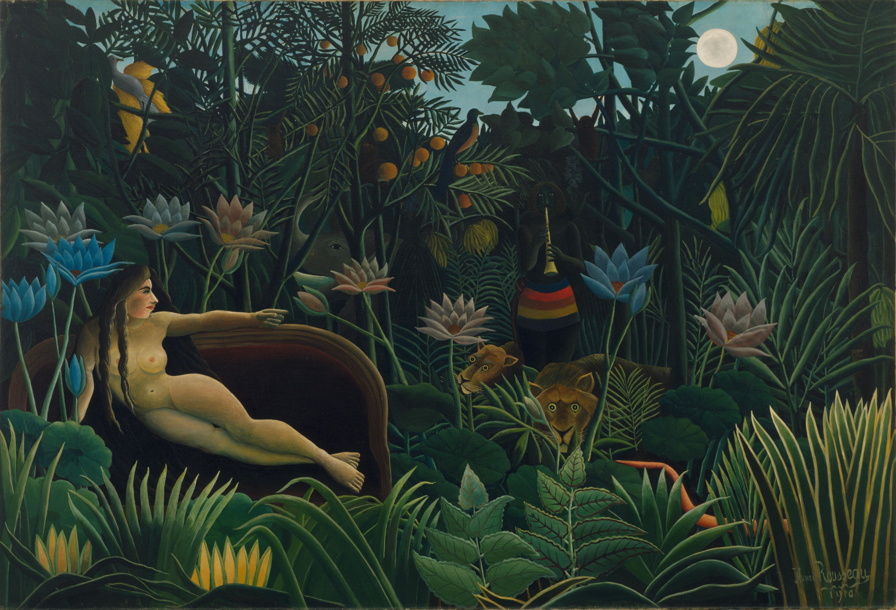
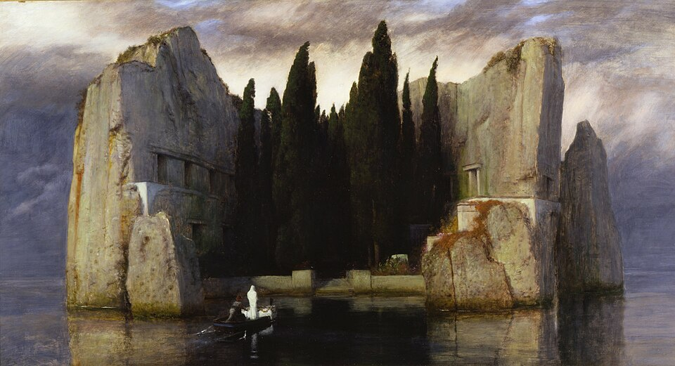
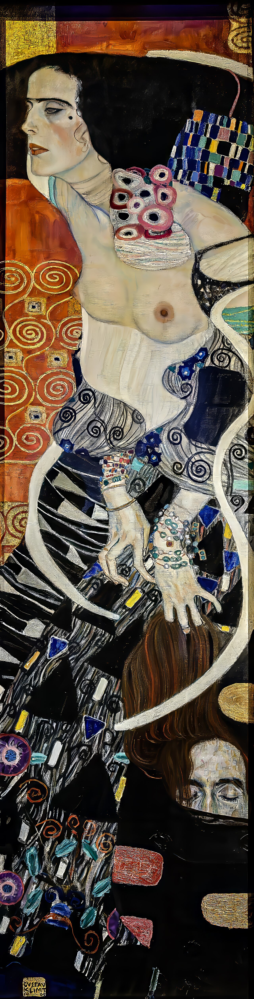
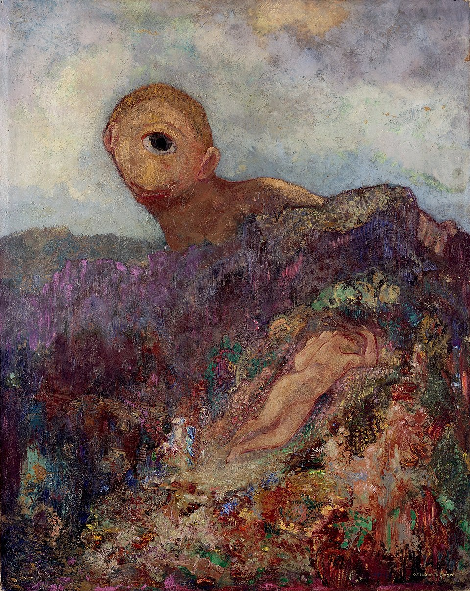
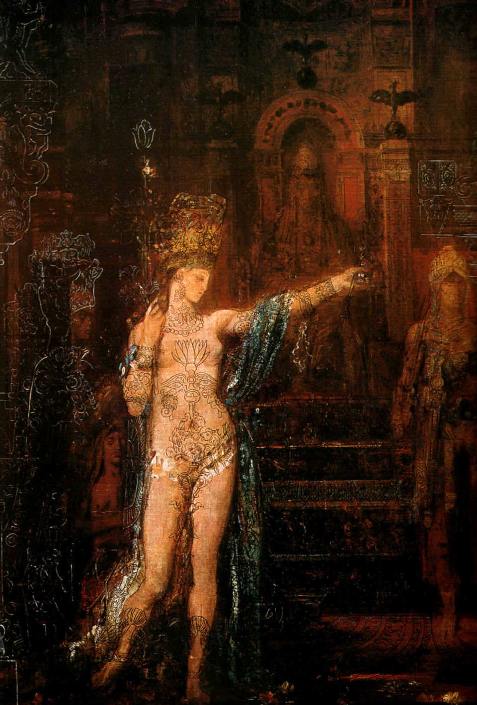
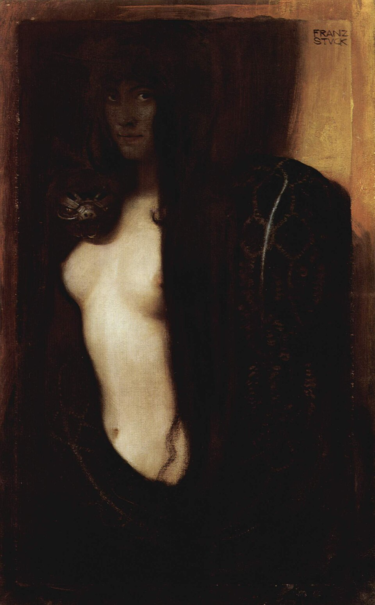

Meesterwerk: De Droom
Henri Rousseau, 1910

⚜️ UITGEBREIDE STIJLFIGUREN
🌙 MYSTIEK & HET ONBEKENDE
Niet de zichtbare wereld: Innerlijke visioenen, dromen, mythen, nachtmerries.
Sfeer: Nacht, schemering, het occulte. Het onzichtbare wordt zichtbaar.
🔗 Tijdsgeest Connecties
Psychologie: Freud's droomtheorie (1900) - dromen als poort naar het onderbewuste
Occultisme: Spiritisme, theosofie (Blavatsky), esoterische genootschappen
Literatuur: Baudelaire's "Les Fleurs du Mal" (1857) - kunst uit het duister
👤 DE VROUW ALS SYMBOOL
Femme Fatale: De verleidster, de heks, de dodelijke schoonheid.
De Maagd: Purity, onschuld, het onaantastbare ideaal.
🔗 Tijdsgeest Connecties
Politiek: Vrouwenemancipatie - de "New Woman" bedreigt de patriarchale orde
Literatuur: Moreau's "Salomé", Wilde's "Salome" (1891) - dodelijke vrouw
Psychologie: Jung's anima - de vrouw als projectie van mannelijke psyche
💀 DOOD & DECADENCE
Morbide fascinatie: Dood, verval, lijkenschoonheid.
Decadence: Schoonheid in verval, esthetisering van de ondergang.
🔗 Tijdsgeest Connecties
Historisch: Fin de siècle - einde van een eeuw, einde van een tijdperk
Literatuur: Huysmans' "À rebours" (1884) - de decadente estheet
Politiek: Verval van aristocratie, opkomst van democratie - angst voor massa
🎨 STILERING & DECORATIE
Figuren als types: Niet individuen maar archetypes, symbolen.
Decoratief: Vlakke patronen, ornament, invloed op Art Nouveau.
🔗 Tijdsgeest Connecties
Wetenschap: Ontdekking van "primitieve" kunst - Egypte, Azië, Afrika
Kunst: Gauguin in Tahiti (1891) - vlucht naar het "pure"
Filosofie: Schopenhauer - kunst als ontsnapping aan de wil
🔗 TIJDSGEEST CONTEXT (1886-1905)
🏛️ POLITIEK PERSPECTIEF: De Belle Époque in Frankrijk, maar met onderliggende spanning. De Dreyfus-affaire (1894-1906) splijt Frankrijk. Het Oostenrijks-Hongaarse Rijk wankelt. Rusland's revolutie van 1905. Kolonialisme is op zijn hoogtepunt - exotisme in de kunst. De aristocratie verliest macht, de bourgeoisie stijgt.
📚 LITERAIR PERSPECTIEF: Het symbolisme begint met Moreas' manifest (1886). Baudelaire, Verlaine, Rimbaud, Mallarmé. De "décadence" literatuur (Huysmans, Wilde). Wagner's muziektheater als totaalkunstwerk. De literatuur wordt hermetisch, moeilijk, esoterisch - kunst voor de elite.
🧠 PSYCHOLOGISCH PERSPECTIEF: Freud ontwikkelt de psychoanalyse. Het onderbewuste wordt erkend. Dromen zijn belangrijk. De mens is niet meester in eigen huis - drift en verlangen sturen ons. Spiritisme en occultisme zijn populair. De grens tussen wetenschap en mystiek vervaagt.
⚙️ HISTORISCH PERSPECTIEF: Fotografie (1888 Kodak) bedreigt de realistische kunst. Elektriciteit (Edison 1879), telefoon (Bell 1876), auto (Benz 1886). De wereld wordt kleiner, maar ook minder begrijpelijk. Archeologie onthulde Troje (Schliemann 1873) en Egypte - het verleden is mythischer dan het heden.
🎭 FILOSOFISCH PERSPECTIEF: Schopenhauer's pessimisme - de wereld is wil en voorstelling. Nietzsche's "God is dood" (1882). De crisis van het rationalisme. Esoterie, theosofie, occultisme bieden alternatieven. Kunst wordt vervanger van religie - de kunstenaar als priester, het kunstwerk als sacrament.
🎨 MEESTERWERKEN - GEDETAILLEERDE ANALYSE
1. "De Droom" (1910) — Henri Rousseau
MoMA, New York | 205 × 299 cm | Olieverf op doek
🔍 STIJLANALYSE
Naïeve stijl: Rousseau was autodidact. Perspectief is "fout" maar creëert droomachtige sfeer.
Jungle: Exotische planten uit de botanische tuin van Parijs. Nooit in een jungle geweest.
Mystiek: Een naakte vrouw op een sofa in de jungle, een slangenbezweerder. Logica is opgeheven.
Betekenis: De droom als alternatieve werkelijkheid - precies het Symbolisme.
2. "De Kus" (1907-1908) — Gustav Klimt
Belvedere, Wenen | 180 × 180 cm | Olieverf en goudblad
🔍 STIJLANALYSE
Symboliek: Liefde als mystieke vereniging. Man en vrouw verstrengeld in ornament.
Goud: Byzantijnse invloed. Het goud verwijst naar heiligheid, eeuwigheid.
Decoratief: Bijna abstract. Figuren verdwijnen in patroon. De rand tussen figuur en achtergrond vervaagt.
Wenen: Het fin-de-siècle Wenen van Freud, Schönberg, Schnitzler - een cultuur op zijn hoogtepunt en einde.
3. "Geest van de Doden Wenkt" (1891) — Arnold Böcklin
Museum Basel | 146 × 150 cm | Olieverf op doek
🔍 STIJLANALYSE
Dood: Een dodenkop die een jonge vrouw wenkt. De dood als verleiding.
Sfeer: Schemering, ruisende zee, dreigende lucht. De overgang tussen leven en dood.
Romantiek: De dood is niet afschuwelijk maar fascinerend, bijna erotisch.
Invloed: Dit werk inspireerde talloze kunstenaars en werd massaal gereproduceerd.
4. "Het Eiland der Doden" (1880) — Arnold Böcklin
Verschillende versies | 80 × 150 cm | Olieverf op doek

🔍 STIJLANALYSE
Memento mori: Een eiland van rots en cypressen - de dood als bestemming.
Mystiek: Het witte gewaad in de boot - wie is deze figuur? Charon? De ziel?
Sfeer: Schemering, mist, stil water - tijdloosheid.
Cultuur: Rachmaninoff componeerde een symfonisch gedicht naar dit werk.
5. "Judith I" (1901) — Gustav Klimt
Belvedere, Wenen | 84 × 42 cm | Olieverf op doek

🔍 STIJLANALYSE
Femme fatale: De moordenaar als verleidster - gevaarlijke schoonheid.
Goud: Byzantijnse pracht - heiligheid en decadentie tegelijk.
Erotiek: Half naakt, sensuele blik - moord als orgastische daad.
Oriëntalisme: Exotische sieraden, mystieke sfeer - het Oosten als fantasie.
6. "De Cycloop" (1914) — Odilon Redon
Kröller-Müller Museum, Otterlo | 64 × 52 cm | Olieverf op doek

🔍 STIJLANALYSE
Mythologie: Polyphemus, de eenogige reus, verliefd op Galatea.
Droom: Een fantasielandschap - bloemen, heuvels, een monster.
Kleur: Pastel, teder - zelfs het monster is bijna schattig.
Onschuld: De cycloop gluurt als een verliefde schooljongen - subversieve mythe.
7. "De Blinde" (1896) — Jean Delville
Musée d'Orsay, Parijs | 100 × 80 cm | Olieverf op doek

🔍 STIJLANALYSE
Idealisme: Een naakte jongeman - perfect lichaam als spiritueel ideaal.
Blindheid: De blik naar binnen - spiritueel zien versus fysiek zien.
Occultisme: Delville was theosoof - kunst als spirituele evolutie.
Platonisme: Het lichaam als gevangenis van de ziel - terug naar de ideaalwereld.
8. "Salomé" (1906) — Gustave Moreau
Musée Gustave Moreau, Parijs | 72 × 47 cm | Aquarel

🔍 STIJLANALYSE
Femme fatale: Salomé, de vrouw die Johannes de Doper onthoofdde.
Overdaad: Juwelen, goud, oosterse pracht - zintuiglijke overload.
Betekenis: De vrouw als vernietigster - angst voor vrouwelijke seksualiteit.
Decadentie: Moreau's obsessieve detaillering - kunst als juwelierswerk.
9. "De Zonde" (1893) — Franz von Stuck
Neue Pinakothek, München | 92 × 60 cm | Olieverf op doek

🔍 STIJLANALYSE
Eva en de slang: De oorspronkelijke zonde - vrouw als verleidster.
Oogcontact: De kijker wordt uitgedaagd - ben jij ook verleid?
Donker: Zwart, goud, donkergroen - zwaar, mystiek, erotisch.
Secessie: Von Stuck was mede-oprichter van de Münchener Secessie.
10. "De Stem van het Bloed" (1894) — Jan Toorop
Rijksmuseum, Amsterdam | 60 × 75 cm | Olieverf op doek

🔍 STIJLANALYSE
Jugendstil: Sierlijke lijnen, stilering - Art Nouveau in Nederland.
Mystiek: Twee figuren in een droomlandschap - oeroude mystiek.
Spiritualisme: Toorop was katholiek covertiet - religie als kunst.
Identiteit: Koloniale achtergrond (Java) smelt met Europese symboliek.